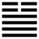

Lôi Thiên Đại Tráng (大壯 dà zhuàng)
Thoán từ:
大壯: 利貞．
Đại tráng, lợi trinh.
Dịch: Lớn mạnh, theo điều chính thì lợi.
Giảng: Quẻ này có 4 nét dương ở dưới, hai nét âm ở trên; dương đã lớn mạnh mà âm sắp bị diệt hết. Quẻ Càn ở trong, quẻ Chấn ở ngoài, thế là có đức dương cương mà động. Lại có thể giảng là sấm vang động ở trên trời, tiếng rất lớn, vang rất xa.
Lớn mạnh thì dĩ nhiên là tốt rồi, nhưng thường tình, gặp thời thịnh, người ta kiêu căng, làm điều bất chính, cho nên thoán từ phải dặn: giữ điều chính, lúc đắc ý nghĩ đến lúc thất ý, thì mới có lợi.
Đại tượng truyện bảo muốn giữ điều chính thì đừng làm cái gì phi lễ. (Quân tử phi lễ phất lí)
Thoán truyện bàn thêm: có chính thì mới có lớn (đại), chính đại là cái “tình” của trời đất, tức cái công dụng hiện ra ngoài của trời đất, (chính đại nhi thiên địa chi tình khả kiến hĩ). Chúng ta để ý: quẻ Phục mới có một nét dương hiện ở dưới cùng, cho nên bảo chỉ thấy cái lòng của trời đất (kiến thiên địa chi tâm), quẻ Đại tráng này, dương đã lớn, được 4 nét rồi, thì thấy được cái tình của trời đất.
Ý nghĩa các hào:
1.
初九: 壯于趾, 征凶, 有孚．
Sơ cửu: Tráng vu chỉ, chinh hung, hữu phu.
Dịch: Hào 1, dương: mạnh ở ngón chân, đi lên thì xấu, có thể tin chắc như vậy (hữu phu ở đây không có nghĩa là có đức tin như những nơi khác).
Giảng: Hào này ở dưới cùng, dương cương, cho nên ví với ngón chân, ở địa vị thấp mà hăng hái muốn tiến, sẽ vấp, xấu.
2.
九二: 貞吉．
Cửu nhị: Trinh cát.
Dịch: Hào 2, dương : có đức chính,tốt.
Giảng: Hào này dương cương, ở vị nhu, tuy không đắc chính, nhưng đắc trung, mà trung thì không bao giờ bất chính, vậy cũng là tốt.
3.
九三: 小人用壯, 君子用罔．貞厲, 羝羊觸藩, 羸其角．
Cửu tam: Tiểu nhân dụng tráng, quân tử dụng võng.
Trinh lệ, đề dương xúc phiên, luy kì giác.
Dịch: Hào 3, dương: tiểu nhân dùng sức mạnh, quân tử không; dù giữ điều chính cũng nguy, như con cừu đực húc vào cái dậu, bị thương cái sừng.
Giảng: Hào này dương cương, ở vào vị dương (lẻ) trong quẻ Đại tráng, lại ở cuối nội quái Càn, thế là cực kì hung mạnh, dù giữ được chính đáng cũng nguy; quân tử biết vậy mà không hành động, chỉ tiểu nhân mới hung hăng như con cừu đực, húc vào cái dậu.
Bốn chữ “quân tử dụng võng”, Chu Hi, J. Legge,R. Wilhelm đều giảng như vậy. Duy Phan Bội Châu bảo “võng” là gan liều, không sợ gì, và “quân tử dụng võng” là “quân tử hữu dũng mà vô nghĩa thì làm loạn”. Chữ at ở đây không phải là người có đức (như Chu Hi hiểu) mà là người trị dân.
4.
九四: 貞吉, 悔亡, 藩決不羸．壯于大輿之輹．
Cửu tứ: Trinh cát, hối vong, phiên quyết bất luy, tráng vu đại dư chi phúc.
Dịch: Hào 4, dương : theo điều chính thì tốt, hối hận mất hết; dậu đã mở không khốn nữa, mạnh mẽ tiến lên, như ngồi cỗ xe lớn mà trục xe vững vàng.
Giảng: Hào này dương cương, qua khỏi nội quái là Càn, mà lên ngoại quái là Chấn, là tráng thịnh đến cực điểm; nó ở trên hết các hào dương, làm lãnh tụ đám quân tử, sợ nó hăng quá mà lầm đường nên dặn kĩ: giữ điều chính thì mới tốt, khỏi ân hận.
Ở trên nó là hai hào âm, âm đã đến lúc suy, dễ đánh đổ; như cái dậu ở trước mặt hào 4 đã mở, không còn bị khốn nữa; nó có thể dắt ba hào dương ào ào tiến lên dễ dàng, cơ hội thuận lợi như ngồi cỗ xe lớn mà trục xe vững vàng.
5.
六五: 喪羊于易, 无悔．
Lục ngũ: táng dương vu dị, vô hối.
Dịch: Hào 5, âm: làm mất sự hung hăng của bầy cừu bằng cách vui vẻ dễ dại, thì sẽ không ân hận.
Giảng: Hào này ở vị chí tôn, nhưng vốn âm nhu, không thể áp đảo được 4 hào dương ở dưới, phải vui vẻ dễ dãi với họ thì họ sẽ hết hung hăng. Bốn hào dương đó ví như bầy dê hung hăng. Sở dĩ phải có thái độ đó vì ngôi của 5 quá cao đối với tư cách âm nhu của nó.
6.
上六: 羝羊觸 藩, 不能退, 不能遂, 无攸利, 艱則吉．
Thượng lục: đề dương xúc phiên, bất năng thoái, bất năng toại, vô du lợi, gian tắc cát.
Dịch: Hào trên cùng, âm: Cừu đực húc vào dậu, mắc kẹt, lui không được, tiến cho toại ý cũng không được, không có lợi gì cả; chịu khó nhọc thì tốt.
Giảng: hào này ở trên cùng quẻ Đại tráng là hết thời lớn mạnh, mà cũng ở trên cùng ngoại quái Chấn, là rất ham động mà bất lực (âm nhu); như con cừu đực hung hăng húc vào dậu, mắc kẹt, lui không được, tiến lên cho toại ý cũng không được, không lợi ở chỗ nào cả. Nếu bỏ tính hung hăng húc quàng đi mà chịu khó nhọc thì tốt.
*
Quẻ này là thời âm suy, dương lớn mạnh lên, đáng lẽ tốt; mà sáu hào không có hào nào thật tốt, chỉ tốt với điều kiện là giữ đạo chính của quân tử; cổ nhân khuyên muốn gặp vận hội tốt thì phải coi chừng hoạ nấp ở đâu đó, nên đề phòng.